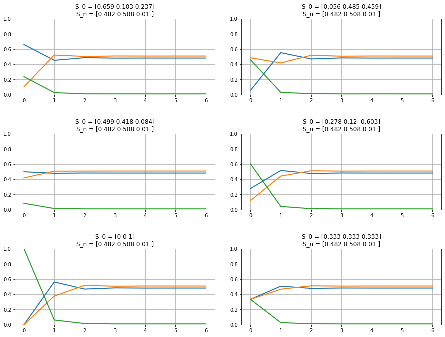
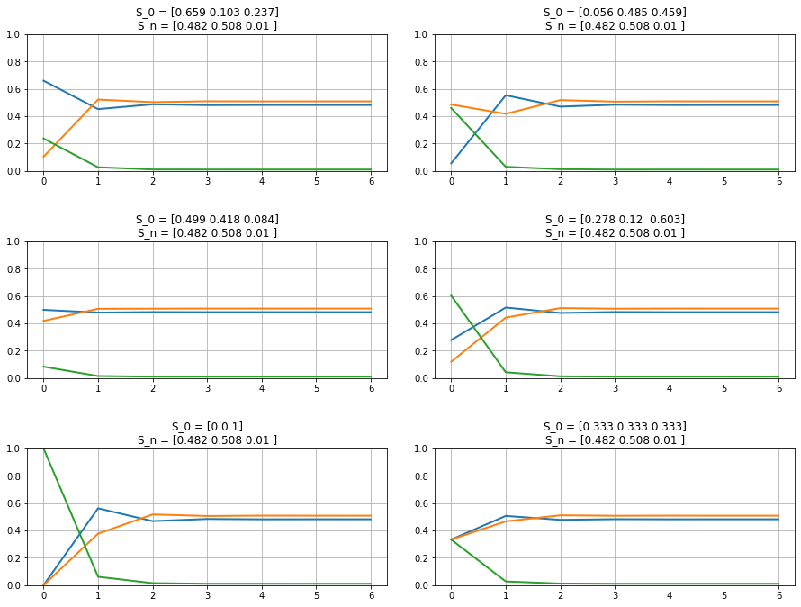

Markov Chains & Markov Dynamics
Contents
Markov Chains & Markov Dynamics#
Let’s say an event can exist in two states, represented in a State Vector \(S_t = \begin{bmatrix} s_{1,t} \\ s_{2,t} \end{bmatrix}\) (at time \(t\)), and there is a probability \(p_{i,j}\) to transfer information from state \(s_i\) to state \(s_j\). All such probabilities can be accounted together in a Transfer Matrix, \(P = \begin{bmatrix} p_{1,1} & p_{1,2} \\ p_{2,1} & p_{2,2} \end{bmatrix}\). Also given that these are probabilities, we have that \(\sum_{j=1}^{n} p_{i,j} = 1\). We find:
\(P_{2\times2} = \begin{bmatrix} 1-p_{1,2} & p_{1,2} \\ p_{2,1} & 1-p_{2,1} \end{bmatrix}\),
\(P_{3\times3} = \begin{bmatrix}
1-(p_{1,2}+p_{1,3}) & p_{1,2} & p_{1,3}\\
p_{2,1} & 1-(p_{2,1}+p_{2,3}) & p_{2,3}\\
p_{3,1} & 1-p_{3,2} & 1-(p_{3,1}+p_{3,2})
\end{bmatrix}\), and so on…
Markov Property:#
Memory-lessness: the transfer matrix \(P\) is not dependent on time or the value of information in the states prior to the present state.
Homogeneity: the function of information transfer will remain the same regardless of the information in the state. i.e. the probability of information transfer from State \(s_i\) to \(s_j\) will remain \(p_{i,j}\) for all time \(t\).
We can then write a function using these tranfer probabilities such that \(s_{i,t+\Delta t} = \sum_{j=1}^{n} s_{j,t}\cdot p_{i,j}\), for all \(i \in \{1,2,...,n\}\). Our new state vector \(S\) at any given time \((t+\Delta t)\) can be written as:
\(\begin{align}
S_{t+\Delta t} &= \begin{bmatrix}s_{i,t+\Delta t}\end{bmatrix}\\
&= \begin{bmatrix}\sum_{j=1}^{n} s_{j,t}\cdot p_{i,j}\end{bmatrix}\\
&= \begin{bmatrix}s_{i,t}\end{bmatrix}\cdot\begin{bmatrix}p_{i,j}\end{bmatrix}\\
\therefore S_{t+\Delta t} &= S_t\cdot P
\end{align}\)
Simply put, a network of such events, connected by directed edges whose strength are the probabilities, is called a ‘Markov Chain’.
# Initialize Libraries
import numpy as np
from matplotlib import pyplot as plt
import networkx as nx
# Function calculates and collects all the states for the Markov Process
def solve_for_markov_process(init_state, transition_mat, iterate_len=0, convergence_rounding=5):
init_state = np.asarray(init_state).ravel();
transition_mat = np.asmatrix(transition_mat).T;
sz = len(init_state);
if len(init_state) != np.unique(transition_mat.shape): return [];
# Iterate over the states if specific number of steps are provided...
if iterate_len > 0:
sn = np.zeros([iterate_len,sz]);
sn[0,:] = init_state;
for state in np.arange(1,iterate_len):
sn[state,:] = np.asarray([
np.dot(np.asarray(sn[state-1,:]).ravel(),np.asarray(el).ravel())
for el in transition_mat
]);
return sn;
# Iterate over the states until convergence is reached...
sn = [];
sn.append(init_state);
factval = np.math.factorial(sz);
while True:
if len(sn)>factval:
idx = np.sort(len(sn) - np.arange(factval) - 1);
idy = np.sort(len(sn) - np.arange(factval) - 2);
if np.round(np.mean(
np.asmatrix(sn[(len(sn)-factval):len(sn)]).ravel()
- np.asmatrix(sn[(len(sn)-factval-1):(len(sn)-1)]).ravel(),
axis=0), convergence_rounding).all() == 0:
break;
sn.append(np.asarray([
np.dot(np.asarray(sn[-1]).ravel(),np.asarray(el).ravel())
for el in transition_mat
]));
return np.asarray(sn);
# Plots all Markov States based on the 'solve_for_markov_process()' function
def plot_markov_states(s0, p):
sn = solve_for_markov_process(s0, p);
plt.plot(sn, linewidth=2);
plt.ylim([0,1]);
plt.title(f'S_0 = {np.round(s0,3)}\nS_n = {np.round(np.asarray(sn)[-1,:],3)}');
plt.grid();
# Draw/Plot the Markov Chain based on the Transfer Matrix (P)
def draw_markov_chain(p, layout_type=0, print_prob=True):
fig = plt.figure(figsize=(10,7));
ax = fig.add_subplot(111, aspect='equal');
G = nx.DiGraph(p);
if layout_type==1: pos = nx.planar_layout(G);
elif layout_type==2: pos = nx.kamada_kawai_layout(G);
else: pos = nx.circular_layout(G);
if print_prob:
[print(f'(S{edge[0]+1}, S{edge[1]+1}): {np.round(p[edge],4)}', end='\t\t') for edge in G.edges()];
nx.draw(
G, pos,
edge_color='black', linewidths=1, width=np.asarray([G[i][j]['weight']*2.5 for i,j in G.edges()]),
node_size=500, node_color='k', alpha=0.9, font_color='w',
labels={node: f'S{node+1}' for node in G.nodes()},
connectionstyle='arc3, rad=0.15'
);
plt.axis('off');
fig.tight_layout(pad=3);
plt.show();
del fig, ax;
# Get Probabilities of State ending in an Absorbing State:
def get_p2as_prob(p):
as_s = np.where(p==1)[0]; # Absorbing States (AS)
if len(as_s)==0: return np.array([]); # Check if P is Absorbing
# Get the Non-Absorbing States (NAS)
nas = np.setdiff1d(np.arange(p.shape[0]), as_s);
reorder = np.append(np.asarray(as_s), nas);
# Record the Sub-Matrices:
I_m = np.eye(len(as_s));
R = p[np.meshgrid(nas,as_s)].T;
Q_n = p[np.meshgrid(nas,nas)].T;
# Calculate the NAS to AS probabilities
I_n = np.eye(len(nas));
F = np.linalg.inv(I_n-Q_n);
nas2as = F * R;
# Return All-to-AS probabilities
all2as = np.concatenate((I_m, nas2as), axis=0);
return all2as[np.argsort(reorder),:];
Basic idea: Let’s assume that \(t\rightarrow n\) and \(\Delta t\rightarrow1\)
\(S_{n+1} = S_n\cdot P\).
\(\ \) \(\ \) \(\ \) where, \(\ \) \(S_n\) := State Vector at instance \(n\).
\(\ \) \(\ \) \(\ \) \(\ \) \(\ \) \(\ \) \(P\) := transition matrix of size \(k\times k\).
\(P\) maintains its transition values no matter what; i.e. it is temporally invariant.
i.e. if \(S_0\) := initial state of a system;
\(\ \) \(\ \) \(\ \) \(S_1 = S_0\cdot P\)
\(\ \) \(\ \) \(\ \) \(S_2 = S_1\cdot P = (S_0\cdot P)\cdot P = S_0\cdot P^2\)
\(\ \) \(\ \) \(\ \) \(S_3 = S_2\cdot P = (S_0\cdot P^2)\cdot P = S_0\cdot P^3\)
\(\ \) \(\ \) \(\ \) \(\vdots\)
\(\ \) \(\ \) \(\ \) \(S_n = S_0\cdot P^n\)
As an example, let \(P = \begin{bmatrix}0.3 & 0.7\\1.0 & 0.0\end{bmatrix}\) and \(\ S_0 = \begin{bmatrix}0.8 & 0.2\end{bmatrix}\);
We find:
\(S_1 = \begin{bmatrix}0.44 & 0.56\end{bmatrix}\),
\(S_2 = \begin{bmatrix}0.692 & 0.308\end{bmatrix}\),
\(S_3 = \begin{bmatrix}0.516 & 0.484\end{bmatrix}\),
\(\vdots\)
\(S_S \approx \begin{bmatrix}0.588 & 0.412\end{bmatrix}\) at instance ‘\(n_S\)’.
Let’s simulate this part…
s0 = np.asarray([0.8, 0.2]);
p = np.asmatrix([[0.3,0.7],[1,0]]);
print(f'P = {np.round(p,4)}\n');
draw_markov_chain(p, layout_type=1);
P = [[0.3 0.7]
[1. 0. ]]
(S1, S1): 0.3 (S1, S2): 0.7 (S2, S1): 1.0

# The function 'solve_for_markov_process' calculates all transitions
print('All state transitions:\n');
print(solve_for_markov_process(s0, p));
# The function 'plot_markov_states' plots all 'solve_for_markov_process' outputs
fig = plt.figure(figsize=(8,5));
ax = fig.add_subplot(111);
plot_markov_states(s0, p);
plt.show();
del fig, ax;
All state transitions:
[[0.8 0.2 ]
[0.44 0.56 ]
[0.692 0.308 ]
[0.5156 0.4844 ]
[0.63908 0.36092 ]
[0.552644 0.447356 ]
[0.6131492 0.3868508 ]
[0.57079556 0.42920444]
[0.60044311 0.39955689]
[0.57968982 0.42031018]
[0.59421712 0.40578288]
[0.58404801 0.41595199]
[0.59116639 0.40883361]
[0.58618353 0.41381647]
[0.58967153 0.41032847]
[0.58722993 0.41277007]
[0.58893905 0.41106095]
[0.58774266 0.41225734]
[0.58858013 0.41141987]
[0.58799391 0.41200609]
[0.58840427 0.41159573]
[0.58811701 0.41188299]
[0.58831809 0.41168191]
[0.58817734 0.41182266]
[0.58827586 0.41172414]
[0.5882069 0.4117931 ]
[0.58825517 0.41174483]
[0.58822138 0.41177862]
[0.58824504 0.41175496]
[0.58822848 0.41177152]
[0.58824007 0.41175993]
[0.58823195 0.41176805]
[0.58823763 0.41176237]
[0.58823366 0.41176634]]

In fact, we find that if \(S_n = S_S\), then \(S_{n+1} = S_S\).
Such states, \(S_S\), are called Steady States. All transfer matrices (\(P\)) which end in such states are called Regular Markov chains. These markov chains have a property where the chain will converge at the Steady State no matter what the initial state (\(S_0\)) is.
fig = plt.figure(figsize=(13,10));
for el in np.arange(4)+1:
s0 = np.absolute(np.random.random(p.shape[0]));
s0 /= np.sum(s0);
ax = fig.add_subplot(3,2,el);
plot_markov_states(s0, p);
del el;
ax = fig.add_subplot(3,2,5); plot_markov_states(np.array([0,1]), p);
ax = fig.add_subplot(3,2,6); plot_markov_states(np.array([1,1])/p.shape[0], p);
fig.tight_layout(pad=3);
plt.show();
del fig, ax, s0;
This holds true for most real-life markov chain models, no matter the size of the model. For example:
# Size-3 Markov Chains:
sz = 3;
p = np.absolute(np.random.random([sz,sz]));
p = np.asmatrix([el/np.sum(el) for el in p]);
print(f'P = {np.round(p,4)}\n');
draw_markov_chain(p);
fig = plt.figure(figsize=(13,10));
for el in np.arange(4)+1:
s0 = np.absolute(np.random.random(p.shape[0]));
s0 /= np.sum(s0);
ax = fig.add_subplot(3,2,el);
plot_markov_states(s0, p);
del el;
ax7 = fig.add_subplot(3,2,5); plot_markov_states(np.array([0,0,1]), p);
ax8 = fig.add_subplot(3,2,6); plot_markov_states(np.array([1,1,1])/3, p);
fig.tight_layout(pad=3);
plt.show();
del fig, ax, s0, sz;
P = [[0.7274 0.2458 0.0268]
[0.4362 0.2784 0.2853]
[0.6293 0.2602 0.1105]]
(S1, S1): 0.7274 (S1, S2): 0.2458 (S1, S3): 0.0268 (S2, S1): 0.4362 (S2, S2): 0.2784 (S2, S3): 0.2853 (S3, S1): 0.6293 (S3, S2): 0.2602 (S3, S3): 0.1105
 

# Size-5 Markov Chains:
sz = 5;
p = np.absolute(np.random.random([sz,sz]));
p = np.asmatrix([el/np.sum(el) for el in p]);
print(f'P = {np.round(p,4)}\n');
draw_markov_chain(p);
fig = plt.figure(figsize=(13,8));
for el in np.arange(2)+1:
s0 = np.absolute(np.random.random(sz));
s0 /= np.sum(s0);
ax = fig.add_subplot(2,2,el);
plot_markov_states(s0, p);
del el;
s0 = np.zeros(sz); s0[np.random.choice(np.arange(sz))] = 1;
ax = fig.add_subplot(2,2,3); plot_markov_states(s0, p);
ax = fig.add_subplot(2,2,4); plot_markov_states(np.ones(sz)/sz, p);
fig.tight_layout(pad=3);
plt.show();
del fig, ax, s0, sz;
P = [[0.2133 0.1961 0.2426 0.1444 0.2036]
[0.1829 0.2711 0.1961 0.2965 0.0534]
[0.3003 0.0606 0.1921 0.4444 0.0026]
[0.2542 0.2489 0.282 0.1532 0.0617]
[0.4665 0.0852 0.1797 0.229 0.0396]]
(S1, S1): 0.2133 (S1, S2): 0.1961 (S1, S3): 0.2426 (S1, S4): 0.1444 (S1, S5): 0.2036 (S2, S1): 0.1829 (S2, S2): 0.2711 (S2, S3): 0.1961 (S2, S4): 0.2965 (S2, S5): 0.0534 (S3, S1): 0.3003 (S3, S2): 0.0606 (S3, S3): 0.1921 (S3, S4): 0.4444 (S3, S5): 0.0026 (S4, S1): 0.2542 (S4, S2): 0.2489 (S4, S3): 0.282 (S4, S4): 0.1532 (S4, S5): 0.0617 (S5, S1): 0.4665 (S5, S2): 0.0852 (S5, S3): 0.1797 (S5, S4): 0.229 (S5, S5): 0.0396


… even size-105 markov chains, but that will require a lot of computational power. So, let’s jump to a different type of markov chains/states…
Absorbing Markov Chains and Absorbing States:#
Absorbing Markov Chains are such that there exists at least one such node/state that only has connections coming inwards and that all nodes/states can be linked to it. That is, if the transfer matrix, \(P = P_A\), has one or more elements which is of the type \([0,0,...0,1,0,...,0]\), then all transitions to the state are possible, but a transition out of this state is not possible. In this case, the transfer matrix ends in an Absorbing State (\(S_A\)), such that all the values of vector \(S\) are zero except \(S[k] = 1\).
Let’s take the example of Size-3 Markov chain from earlier, and make one state absorbing…
sz = 3; abs_state = np.random.choice(sz);
p = np.absolute(np.random.random([sz,sz]));
p = np.asmatrix([el/np.sum(el) for el in p]);
p[abs_state,:] = 0; p[abs_state,abs_state] = 1;
print(f'P = {np.round(p,4)}\n');
draw_markov_chain(p, layout_type=1);
print(f'That is, S{abs_state+1} is the Absorbing State.\n');
fig = plt.figure(figsize=(13,7));
for el in np.arange(3)+1:
s0 = np.absolute(np.random.random(p.shape[0]));
s0 /= np.sum(s0);
ax = fig.add_subplot(2,2,el);
plot_markov_states(s0, p);
del el;
s0 = np.zeros(p.shape[0]);
s0[np.random.choice(np.setdiff1d(np.arange(p.shape[0]),abs_state))]=1;
ax = fig.add_subplot(2,2,4); plot_markov_states(s0, p);
fig.tight_layout(pad=3);
plt.show();
del fig, ax, s0, sz, abs_state;
P = [[0.1898 0.3339 0.4763]
[0. 1. 0. ]
[0.4006 0.466 0.1334]]
(S1, S1): 0.1898 (S1, S2): 0.3339 (S1, S3): 0.4763 (S2, S2): 1.0 (S3, S1): 0.4006 (S3, S2): 0.466 (S3, S3): 0.1334

That is, S2 is the Absorbing State.

Such tranfer matrices have the form of: \(P_{A\ ((m+n)\times(m+n))} = \begin{bmatrix}I_m&O\\R&Q_n\end{bmatrix}\).
One can then define the Fundamental Matrix as: \(F_n = (I_n - Q_n)^{-1}\);
And then find the matrix of probabilities of starting in Non-Absorbing State and ending in an Absorbing State as \(F\cdot R\).
Let’s try this out for the problem above. We already know what the Markov Chain looks like…
# Absorbing States (AS)
as_s = np.where(p==1)[0];
# Get the Non-Absorbing States (NAS)
nas = np.setdiff1d(np.arange(p.shape[0]), as_s);
# Reorder the matrix to get the form for Absorbing Transfer Matrix:
reorder = np.append(np.asarray(as_s), nas);
p_absorbing = p[np.meshgrid(reorder,reorder)].T;
print(f'\nP-Absorbing (re-ordered P):\n{p_absorbing}');
# Storing the Sub-Matrices:
I_m = np.eye(len(as_s));
R = p[np.meshgrid(nas,as_s)].T;
Q_n = p[np.meshgrid(nas,nas)].T;
# Calculate the NAS to AS probabilities
I_n = np.eye(len(nas));
F = np.linalg.inv(I_n-Q_n);
nas2as = F * R;
print(f'\nProbabilities that NAS will end up in AS: (re-ordered list)\n{nas2as}');
# Add AS-to-AS with NAS-to-AS probabilities
all2as = np.concatenate((I_m, nas2as), axis=0);
# Re-arrange all the values according to the list of the States:
print(f'\nAll arranged probabilities:\n{all2as[np.argsort(reorder),:]}');
---------------------------------------------------------------------------
ValueError Traceback (most recent call last)
Cell In[9], line 9
7 # Reorder the matrix to get the form for Absorbing Transfer Matrix:
8 reorder = np.append(np.asarray(as_s), nas);
----> 9 p_absorbing = p[np.meshgrid(reorder,reorder)].T;
11 print(f'\nP-Absorbing (re-ordered P):\n{p_absorbing}');
13 # Storing the Sub-Matrices:
File /opt/hostedtoolcache/Python/3.8.14/x64/lib/python3.8/site-packages/numpy/matrixlib/defmatrix.py:966, in matrix.T(self)
935 @property
936 def T(self):
937 """
938 Returns the transpose of the matrix.
939
(...)
964
965 """
--> 966 return self.transpose()
File /opt/hostedtoolcache/Python/3.8.14/x64/lib/python3.8/site-packages/numpy/matrixlib/defmatrix.py:180, in matrix.__array_finalize__(self, obj)
178 return
179 elif (ndim > 2):
--> 180 raise ValueError("shape too large to be a matrix.")
181 else:
182 newshape = self.shape
ValueError: shape too large to be a matrix.
The calculations reflect those from the function get_p2as_prob( )
sz = 5; abs_state = np.random.choice(sz);
p = np.absolute(np.random.random([sz,sz]));
p = np.asmatrix([el/np.sum(el) for el in p]);
p[abs_state,:] = 0; p[abs_state,abs_state] = 1;
draw_markov_chain(p, print_prob=False);
p2as = get_p2as_prob(p);
print(p2as);

[[1.]
[1.]
[1.]
[1.]
[1.]]
Note that the list is all 1's because only 1 Absorbing State (AS) exists in this case. What if more were added? Given below, are examples with 2 and 3 absorbing states. Notice that the probabilities of escaping these states is 0, i.e. if one begins from an AS, they cannot transition out of the state...
sz = 5; abs_state = np.random.choice(sz, 2, replace=False);
p = np.absolute(np.random.random([sz,sz]));
p = np.asmatrix([el/np.sum(el) for el in p]);
p[abs_state,:] = 0; p[abs_state,abs_state] = 1;
draw_markov_chain(p, print_prob=False);
p2as = get_p2as_prob(p);
print(p2as);

[[0.60720023 0.39279977]
[1. 0. ]
[0.48023909 0.51976091]
[0.66032729 0.33967271]
[0. 1. ]]
sz = 11; abs_state = np.random.choice(sz, 3, replace=False);
p = np.absolute(np.random.random([sz,sz]));
p = np.asmatrix([el/np.sum(el) for el in p]);
p[abs_state,:] = 0; p[abs_state,abs_state] = 1;
draw_markov_chain(p, print_prob=False);
p2as = get_p2as_prob(p);
print(p2as);

[[0.39506911 0.30922911 0.29570178]
[0.32454023 0.36820207 0.30725769]
[0.41278558 0.29558675 0.29162767]
[1. 0. 0. ]
[0. 1. 0. ]
[0.38762782 0.30666532 0.30570686]
[0.41961767 0.34723819 0.23314414]
[0.43717516 0.34092161 0.22190323]
[0.49410128 0.27101664 0.23488207]
[0. 0. 1. ]
[0.26211671 0.37993706 0.35794623]]